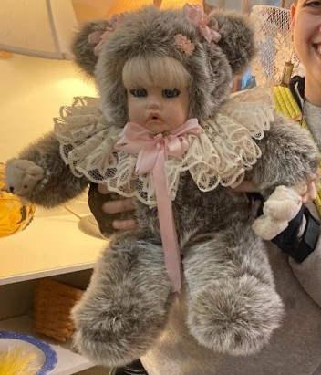
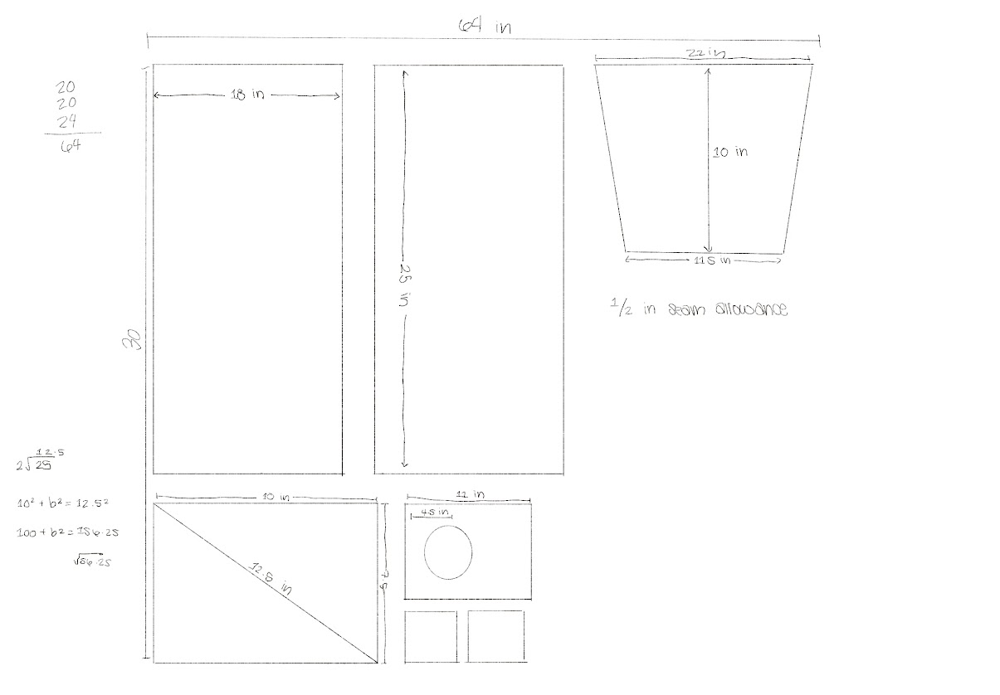

Inspiration
Cuddlekins
Conceptualization
This is one of the few costumes I have were I didn't make an initial sketch or have an image which I was working off of. I was initially inspired by a stuffed bear I have named Cuddlekins (see sidebar). While I was nervous about including her in my costume, I did think about making my own version of her so that I could include it in the costume.
Based on this inspiration, I decided that the character I wanted to aim for was someone who makes living creatures akin to Cuddlekins–Frankenstein-like creatures made out of stuffed animals, dolls, and scrap fabric. This idea would require reusing clothing and fabric I already had, or buying clothing with the sole purpose of destroying it.
Fabrication Process
The fur hood which I wore was created in 2020 as a fun practice project, using a pattern from Lemon Squeezy. I used a faux fur infinity scarf and gray flannel. The scraps from the project were saved, and later used in the creation of the tunic.
Before I sewed the fabric together, I needed to figure out exactly how much I would need. I created a pattern based off of various free patterns I found online. Once I head the measurements, I sewed together enough fabric scraps to cut out the pattern and sew together the tunic. I used some scrap tweed to line the collar, which I hand-sewed on with red embroidery thread. The rest of the tunic was machine-sewn.
The gloves and the belt I crocheted using ombre-green acrylic yarn. I didn't use a pattern for the gloves. The belt was made using the wrap waist belt pattern by Stone Sparrow Threads. It closed in the back with a large yellow sunflower button and a loop of yarn. I then attached several buttons, charms, and other items. Because my pants didn't have pockets, I also attached a removable leather pouch which I already owned, which I used to hold my phone and wallet. Also attached was a headless Barbie left over from another art project, a tape measure, small scissors, and my crochet hook.
The pants were made using a pair of green skinny jeans and a green dress shirt, which I cut and sewed together using a pattern for harem pants I found on Blogspot. The pants were hand-sewn, with a crochet granny square sewn onto the knee. I had a second granny square attached to twine which I tied around the opposite knee.
Because I was going to be on my feet for a while, I knew that I was going to have to bring my cane with me. To make it cohesive with my costume, I took long strips of the leftover fabric from the tunic, was well as random ribbons and crochet chains that I had around, and I tied them to the top of my cane as decoration.
Hair & Makeup
The makeup for the "Doll Necromancer" was pretty straight forward. I used white foundation and translucent setting powder to cover my face, and 24hr liquid red lipstick. I had on eyeliner and mascara as well, but because we were outside all day, I didn't take off my sunglasses very often. The intention was to make myself look like a doll. I also painted my finger and toe nails, using different colors for each to keep the "patchwork" look.
Like the makeup, the hair was also straight forward. I divided the longer part of my hair into four sections, which I put into pigtails. I then put four mismatched barrettes in my hair.